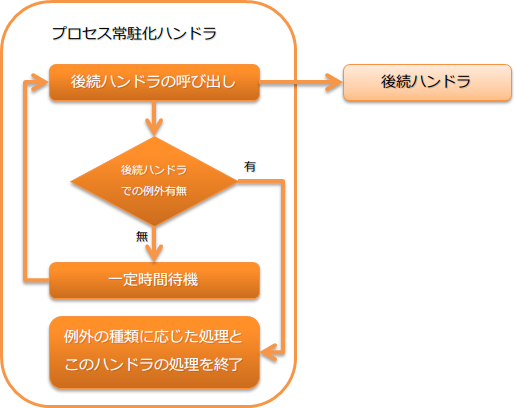

6.7.1. プロセス常駐化ハンドラ¶
後続のハンドラキューの内容を一定間隔毎に繰り返し実行するハンドラ。 本ハンドラは、特定のデータソース上の入力データを定期的に監視してバッチ処理を行う、いわゆる常駐起動型のバッチ処理で用いられる。
本ハンドラでは、以下の処理を行う。
- 一定間隔(データの監視間隔)毎に後続ハンドラの呼び出し。
- 後続ハンドラで例外発生時に、このハンドラの継続有無などを判断する。 詳細は、 後続ハンドラで発生した例外の扱い を参照。
処理の流れは以下のとおり。
{kind=link}
6.7.1.2. モジュール一覧¶
<dependency>
<groupId>com.nablarch.framework</groupId>
<artifactId>nablarch-fw-standalone</artifactId>
</dependency>
6.7.1.3. 制約¶
- 本ハンドラは、リトライハンドラよりも後ろに設定すること
- 本ハンドラで実行時例外を捕捉した場合、リトライ可能例外( RetryableException )でラップしてから再送出し、 プロセスの継続制御を リトライハンドラ に委譲する。 このため、このハンドラはリトライハンドラより後に設定する必要がある。
6.7.1.4. データの監視間隔を設定する¶
データの監視間隔は、 dataWatchInterval プロパティにミリ秒で設定する。 設定を省略した場合のデフォルト値は、1000ミリ秒(1秒)となっている。
以下に例を示す。
<component name="settingsProcessResidentHandler"
class="nablarch.fw.handler.ProcessResidentHandler">
<!-- データの監視間隔に5秒(5000)を設定 -->
<property name="dataWatchInterval" value="5000" />
<!-- その他のプロパティは省略 -->
</component>
6.7.1.5. プロセス常駐化ハンドラの終了方法¶
このハンドラはプロセスの正常終了を示す例外が送出された場合に、後続のハンドラの呼び出しを止め処理を終了する。 デフォルトでは、 プロセス停止制御ハンドラ が送出する処理停止を示す例外( ProcessStop (サブクラス含む))が送出された場合に、このハンドラは処理を終了する。
プロセスの正常終了を示す例外を変更したい場合には、 normalEndExceptions プロパティに例外クラスのリストを設定する。 なお、例外リストを設定する場合にはデフォルトの設定が上書きされるため、 ProcessStop の設定を忘れずに行う必要がある。
以下に例を示す。
<component name="settingsProcessResidentHandler"
class="nablarch.fw.handler.ProcessResidentHandler">
<!-- プロセスの正常終了を示す例外リスト -->
<property name="normalEndExceptions">
<list>
<!-- Nablarchデフォルトのプロセス停止を示す例外クラス -->
<value>nablarch.fw.handler.ProcessStopHandler$ProcessStop</value>
<!-- プロジェクトカスタムなプロセス停止を示す例外クラス(サブクラスも対象となる) -->
<value>sample.CustomProcessStop</value>
</list>
</property>
<!-- その他のプロパティは省略 -->
</component>
6.7.1.6. 後続ハンドラで発生した例外の扱い¶
このハンドラでは、後続のハンドラで発生した例外の種類に応じて、処理を継続するか、終了するかが切り替わる。
以下に例外毎の処理内容を示す。
- サービス閉塞中例外( ServiceUnavailable )
- サービス閉塞中例外の場合には、データ監視間隔に設定された時間分待機後に、再度後続ハンドラを実行する。
- リトライ可能例外
- リトライ可能例外( RetryUtil#isRetryable() が真を返す場合)の場合は、 何もせずに捕捉した例外を再送出する。
- プロセスを異常終了する例外
プロセスを異常終了させることを示す例外の場合は、なにもせずに捕捉した例外を再送出する。
プロセスを異常終了させる例外は、 abnormalEndExceptions プロパティに設定する。 デフォルトでは、 ProcessAbnormalEnd (サブクラス含む)が、異常終了対象クラスとなる。
- プロセスを正常終了させる例外
後続のハンドラから戻された結果オブジェクトを、本ハンドラの戻り値として処理を終了する。
プロセスを正常終了させる例外については、 プロセス常駐化ハンドラの終了方法 を参照。
- 上記以外の例外
- 例外情報をログに記録し、リトライ可能例外 ( RetryableException )でラップし再送出する。